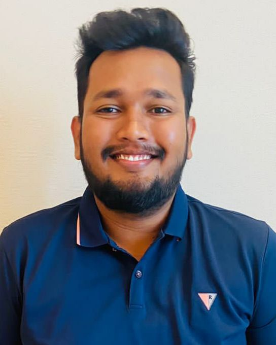

Kushan Madubasha

Summary
I am a hardworking responsible individual, capable of accomplishing
the best in any competitive envronment.
Education
B.sc Engineering(Hons) Specialized in Civil Engineering University
of Moratuwa
Work Experience
Civil Engineer - Luminex PLC (DEC 2021 - April 2023)-Matara stage IV
water supply project
- 50km single trench HDPE pipe laying.
- Preparng monthly program & cost/income forecast.
- Salinity barrier construction.
Trainee Civil Engineer - (JUN 2018 - OCT 2018) National Water Supply &
Drainage Board Sri Lanka
- Member of the design review team for Jaffna Kilinochchi water
supply and sanitation project
- Member of the design review tea for sanitation and hygiene
initiative for towns (SHIFT) project.
- Civil Engineering trainee Aluthgama mathugama and Agalawaththa
intergrated water supply project(PVC/DI) pipe laying & tower
construction.
Research & Findings
-
Research - Use of parametric and non-parametric methods for
detecting outliers in rainfall extremes in Sri lanka.
Extracurricular Activities
- Member of science society.
- Member of Mahinda college chess team.
- Member of media club Mahinda college.
Skills
- Language Fluency in English: ★★★★☆
- IT Skills in MS Office: ★★★★☆
- Interpersonal Leadership Managemenet: ★★★★☆
- team work & skills: ★★★★☆
Other
- My hobbies
- My contact details